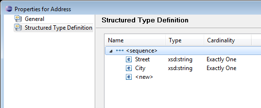
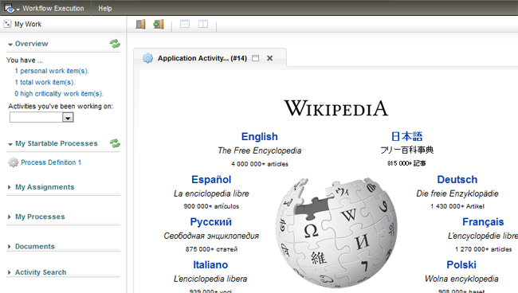
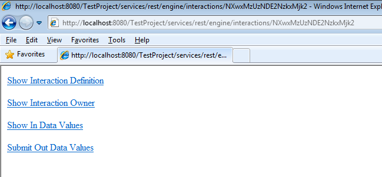

Process-based UI Mashup Applications provide the option to integrate data and services provided by different sources and support interactions between them. For details on the concept of using UI Mashup Applications, please refer to chapter Process-based UI Mashups of the Stardust Concepts.
To add an External Web Application to a model perform the following steps:
Figure: Create an External Web Application.
Figure: External Web Application Properties.
Figure: Add Input Source Parameters
Figure: Setting Typed Access Points.
You can modify the specified source and target access points.
Figure: Modify Typed Access Point
Figure: Modify Typed Access Point
You can delete the source and target access points.
Figure: Delete Typed Access Point
Figure:
Warning - Delete Typed Access Point
You can use access point path as well as data path in the data mapping. Per default, only the full value of a parameter is used. You can change this behavior to either enter the name of declared parameters or the data mapping IDs. To have both options, change the property Carnot.Compatibility.Interactions.SupportDataMappingIds, in your carnot.properties file to true.
It is also possible to write an attribute of a structured parameter to a primitive variable, e.g.:
Figure: Using a Structured Data Attribute in Out Data Mapping
This is a small example to demonstrate the usage of an External Web Application associated with an application activity.
In a dynamic Web project create a model as follows:

Figure: Structured Type Address
Figure: Structured Type Person
Figure: Add Typed Access Points
Your model now looks similar to the model in the following figure:
Figure: Example Model
Now start your server, deploy the model and run the activity associated with the External Web Application in the Stardust Portal. Your application should come up with the URL you entered in the properties page.
For example, if you entered the URL http://www.wikipedia.com, the following page is coming up:

Figure: Example URL.
Now you may inspect the interaction via its REST interface.

Figure: Interaction URI
Selecting one of these options displays the according xml file. For example Show In Data Values displays all the in-data values of the activity, which invoked the External Web Application:
Figure: Example - Show In Data Values
entered in the entry fields for a structured data:
Figure: Example - Entered In Data Values.
If you like to use an External Web Application in your Web project domain, add your sources like JavaScript and HTML files to the Web-Content folder of your Web project.
Figure: Web-Content with HTML source
In the External Web Application, enter the URL to your Web project domain accordingly.
Figure: URL containing Web Project resource
You have the option to participate in the Close Panel command if you use External Web Applications in the same Domain. To adjust the command, define method performIppAiClosePanelCommand() in your resource.
This allows for example to add a preprocessing command or even to reject the processing of the close command.
For example to add a preprocessing command use the following code:
<script>
function performIppAiClosePanelCommand(commandId){
if (doPreprocessing()) {
parent.IppProcessPortalClient.confirmCloseCommandFromExternalWebApp(commandId);
}
}
function doPreprocessing(){
// Do Preprocessing, and if successful then return true
}
</script>
In this example we create an External Web Application in a RAD environment, which opens a confirmation dialog with an alert about the type of closing when an activity is closed or suspended and saved.
<html>
<head>
<meta http-equiv="Content-Type" content="text/html; charset=ISO-8859-1">
<title>Insert title here</title>
<script>
function performIppAiClosePanelCommand(commandId){
alert("Confirming Close Panel Command for: "+commandId);
parent.IppProcessPortalClient.confirmCloseCommandFromExternalWebApp(commandId);
}
</script>
</head>
<body>
Welcome in Application using the Close Panel Command!
</body>
</html>An example use case is to mashup angular based UI into the Stardust Portal. For details on the steps to perform such a mashup, please refer to chapter Mashing up Angular based UI into Stardust Portal in our Tutorial Guide. This tutorial guides you through the steps to mash up Angular based UI into the Stardust Portal. It describes how to ensure that data entered on the Angular UI is saved in the Stardust data and the Stardust data can be read and displayed in the Angular UI mashed up in the Stardust Portal.
Note that the tutorial model is created in the Modeling perspective, but the usage concept is applying to the Eclipse modeler as well.